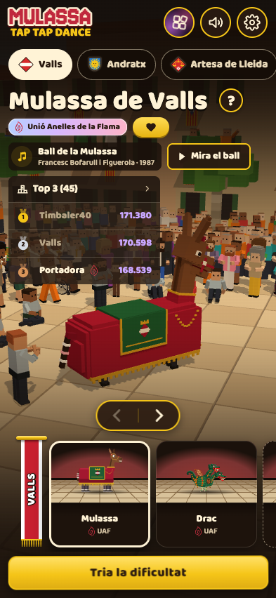
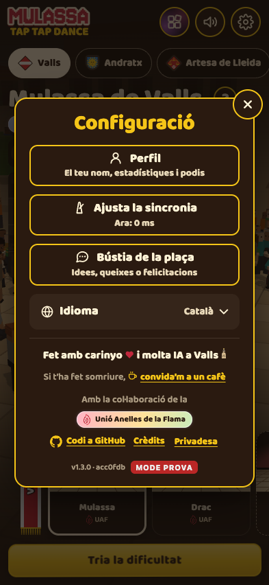
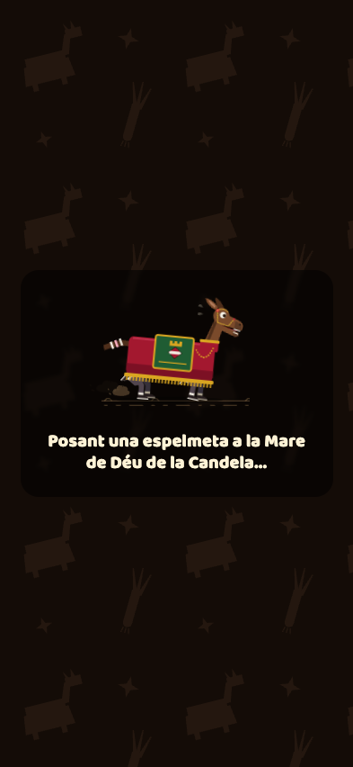
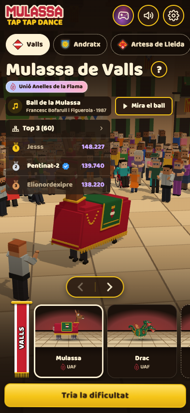

Estudi visual · 02/11/2026
Quina cara té Mulassa Crush?
He explorat quatre direccions amb el generador d'imatges. Mantinc l'estructura A que vas triar: portada, camí per Valls, preparació i resultat. No he canviat el joc.
Les imatges són propostes, no pantalles jugables. A i C mostren victòria; B i D mostren derrota. Pots marcar i comentar cada pantalla. Deso les notes només en aquest navegador; copia-les abans de canviar de dispositiu.
D'on parteixo
He mirat el selector, la configuració i la càrrega locals a 393 × 852 amb Chrome sense finestra. També he capturat el selector de mulassa.cat. He llegit les regles de la UI, les targetes, els menús del Crush i la proposta d'organització A.








He passat al generador les captures del selector i la configuració, la portada actual amb les set peces, i els PNG reals del Basilisc i el Drac. El límit és de cinc referències per generació. El fons de plaça queda inclòs a la captura del Crush.
Textos, límits i indicacions al generador
He demanat literalment: "Mulassa Crush", "Som-hi!", "Com es juga", "El camí", "Juga", "Ara no", "Recull 45 basiliscs", "Repic de campanes!", "Ha fet llenya!", "40 de 45 basiliscs al sac. Seguim!", "Una altra!", "Nivell següent", "Camí".
Indicació comuna: quatre pantalles de telèfon en una làmina, proporció 393 × 852, marges iguals, Baloo 2, marró #2a1a10, crema #fff3d6, or #f5c518, una acció principal, figures fidels a les referències. Sense art de King, botigues, compres, anuncis, vides ni rellotges.
A: plaça de Valls al vespre, llum càlida, camí empedrat i finestres fosques. B: plànol imprès en crema, illes urbanes planes i línia fina. C: retrats amb rajoles, franja de Valls, anella crema i siluetes de càrrega. D: cartell gràfic vermell, marró i crema, arquitectura retallada i formes grans.
He regenerat D perquè havia afegit un nom de carrer mal escrit i una campana festiva a la derrota. La versió final els corregeix. En A i C el resultat queda damunt del camí, tot i que havia demanat el tauler atenuat per a A: és una limitació de la làmina, no una proposta de canviar el flux. El generador interpreta els detalls i les proporcions; aquestes làmines no fixen píxels ni garanteixen que els botons dibuixats tinguin 44 px. En implementar-les, el text ha de ser DOM i les peces han de ser els PNG originals. El recorregut és esquemàtic, no un plànol verificat dels carrers.
Com he revisat la pàgina
Chrome sense finestra, 320 × 568 i 393 × 852: marges laterals 16/16 px, farciment 16 px i separació entre pantalles 24 px. A 1024 × 768 i 1280 × 800: marges 24/24 px, farciment 24 px i separació 16 px. Imatges carregades i cap desbordament horitzontal ni error de consola a les quatre mides. He comprovat que les notes sobreviuen a una recàrrega i que funciona la còpia alternativa en aquesta adreça HTTP. La còpia moderna requereix un context segur; aquí he verificat el fallback. No he executat tests del projecte ni he provat un telèfon físic.
Les teves notes
He mantingut el patró de marques, comentari i còpia de l'estudi de nivells. Pots comentar una proposta sencera o una pantalla concreta.